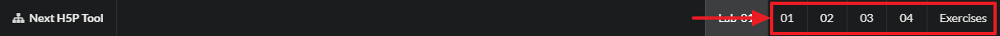

Objectives
Create a flashcard that's intuitive in relation to content covered in class, the flashcard will have images that the user has to pair with questions and answers in the activity.
How to use this lab
When you click on the lab card on the workshop screen (see example below) you will be presented with the labs steps screen

Lab steps
Next you will need to work your way through each step, starting with the objective (this screen) then work your way through the steps start with 01 then moving to 02 and so on.

Getting back to the home screen
In order to get back to the workshop screen simply click on the workshop name in the top left

lets get started
To view the Flashcard component on the H5P website please follow the example link on the workshop page or click here
The Context
So for this example I will use some example from the Science periodic table
Log into Moodle
Log into Moodle here and navigate to your sandbox area where you want to use the H5P flashcard component, at this stage we will start the process by adding the H5P Interactive Content type in Moodle.
Adding the activity
I have decided to call the section Flashcard example but you may want to use some other name which is okay, select the Add an activity or resource option.

Add in Interactive Content
Now select the Interactive content type from the pop-up list

Search and use the correct Interactive Component
A this stage you will start to build the H5P Interactive content. Select or search find the editor for the component you plan on using, in this case it the Flashcard, so I have started the search for "Flash"

Now you should see the flashcard component select the detail button
Now we can use this component now by selecting the "use" button

Next
Move to step 02 in the lab
Images
For this example I had to source images from the periodic table, I did a google search for free iamges from the perodic table
Free images
You can search for royalty free images using a Google search, all you have to do is search for the images. select tools from the menu then select your preferred license type, I choose images labeled for reuse.

Flashcard Images
If you want you can use my images for example from the periodic table, download the archive - here and unpack the archive to use the images.
Flashcard content
The way this flashcard works is the student will be presented with an image and a question and they supply an answer, in this example we are going to use 3 images and 3 associated questions.
Flashcard setup
Once you have chosen to use the flashcard you searched for in the previous step you now have to start to build the content
Start by setting up the Title and the Task Description, for this example you can follow my example or if you want to use you own thats fine.
Flashcard Question
No you can start to set up the first question, in order to do this you must fill in the question text in the field provided followed by the correct answer, see image below.
We will ask them what is the Covalent radius (Å) is . . . associated with the Iron element from the periodic table, the answer is 1.24
Flashcard image
Now you can associate an image with the question, upload your image from you computer that you have chosen or if you want please feel free to use the images supplied in the archive.
You should now have the image in place
Next
Thats the first question done, move to step 03 to add a new question.
The second question
This is the second of three questions
Free images
If you want you can use my images for example from the periodic table, download the archive - here and unpack the archive to use the images.
Or you can can search for royalty free images using a Google search, all you have to do is search for the images. select tools from the menu then select your preferred license type, I choose images labeled for reuse.
Flashcard Question
No you can start to set up the second question, in order to do this you must add a new card

Again, fill in the question text in the field provided followed by the correct answer. We will ask them what is the Electronegativity (Pauling scale) is . . . . associated with the Polonium element from the periodic table, the answer is 2.0
Flashcard image
Now you can associate an image with the question, upload your image from you computer that you have chosen or if you want please feel free to use the images supplied in the archive.

You should now have the image in place

Next
Move to step 04 to add the last question.
The thrid question
This is the third (last) of three questions
Free images
If you want you can use my images for example from the periodic table, download the archive - here and unpack the archive to use the images.
Or you can can search for royalty free images using a Google search, all you have to do is search for the images. select tools from the menu then select your preferred license type, I choose images labeled for reuse.
Flashcard Question
No you can start to set up the second question, in order to do this you must add a new card

Again, fill in the question text in the field provided followed by the correct answer. We will ask them what is the Electron affinity (kJ mol−1) . . . associated with the Radium element from the periodic table, the answer is 9.65

Flashcard image
Now you can associate an image with the question, upload your image from you computer that you have chosen or if you want please feel free to use the images supplied in the archive.
You should now have the image in place

Testing
Thats it your finished creating the flashcard component all you have to now is save all your changes and test you work to make sure everything works as it should.
As you work through the component in Moodle you will be presented with the result as the student would see them and it will also give the student the option to retry.
Next
Move to the Exercise
Exercises
To complete this workshop please complete the Flashcard activity in Moodle
Feedback
Please let us know if you had any issues with this workshop, we want to make improvements but we need you help, please take a few moment to fill in this feedback we appreciate all comments and suggestions
Accreditation
In order to receive your accreditation you will have to upload and submit your Flashcard activity to Moodle.
step 1
First, you must download the Flashcard activity from your Moodle sandbox page
step 2
Second, you can upload the Flashcard activity to the submission area here